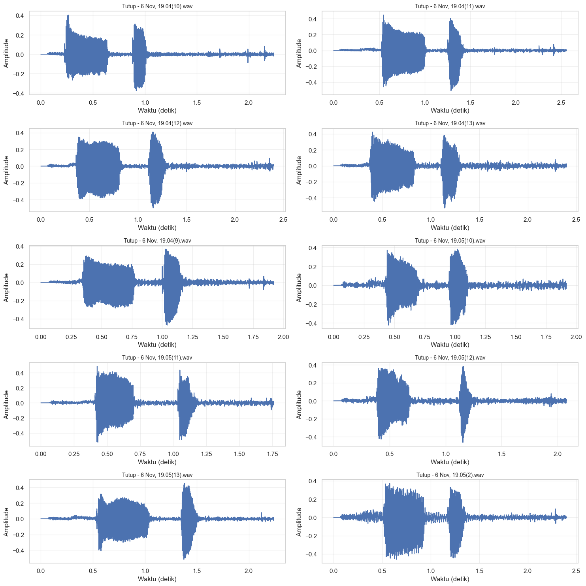
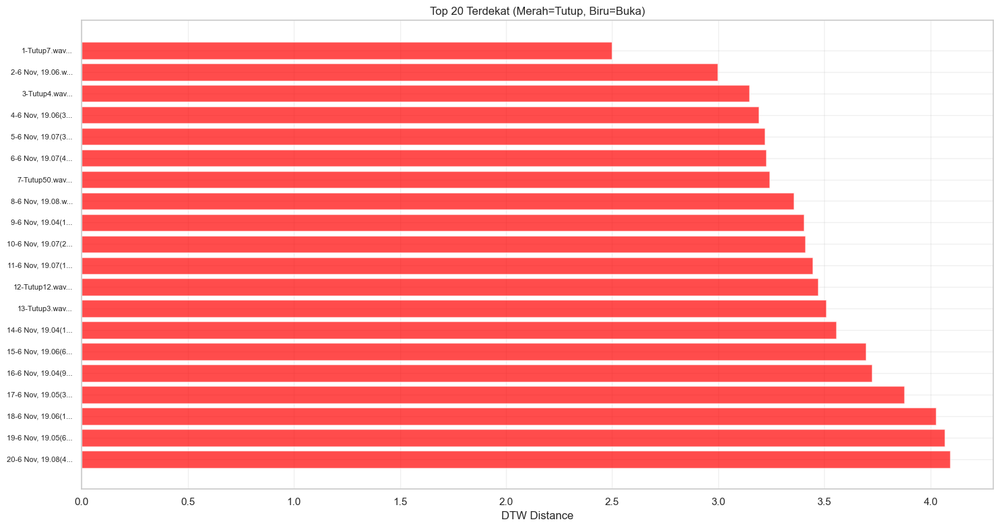
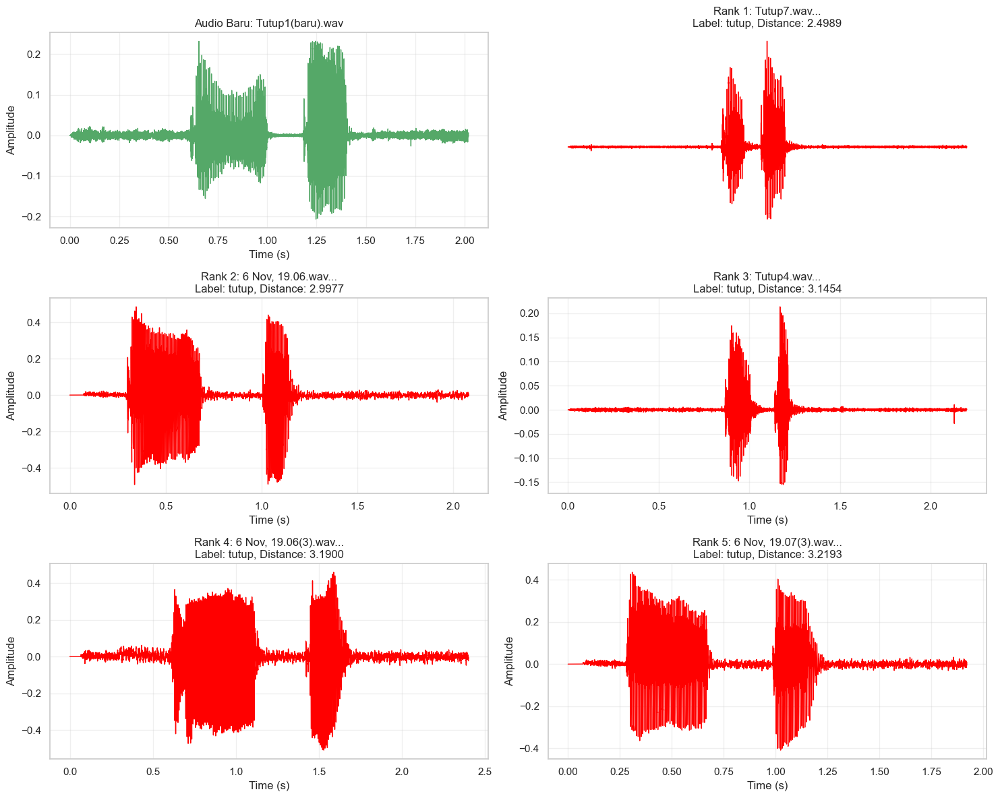
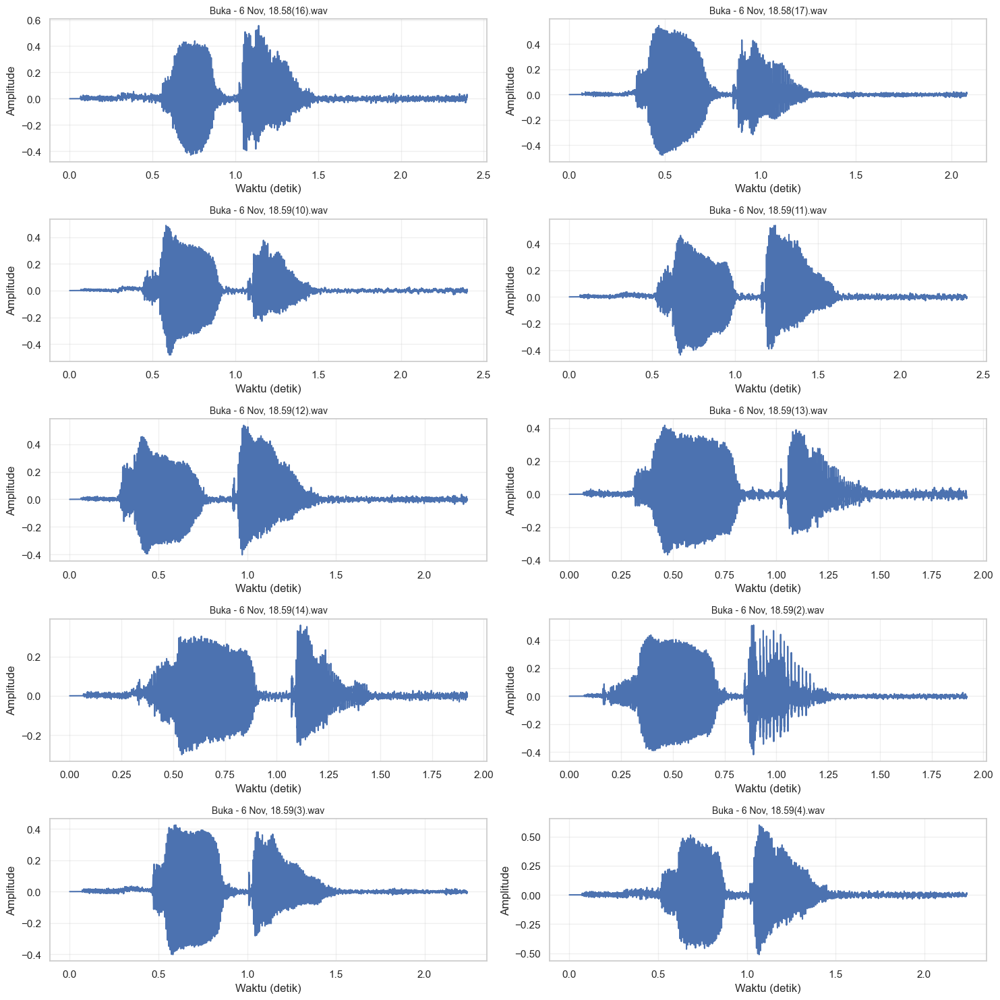
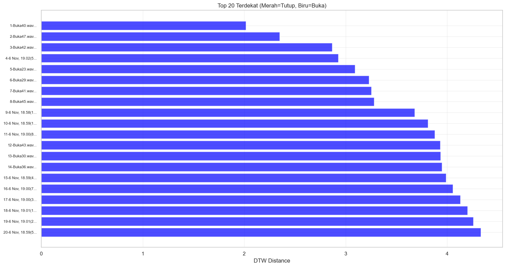
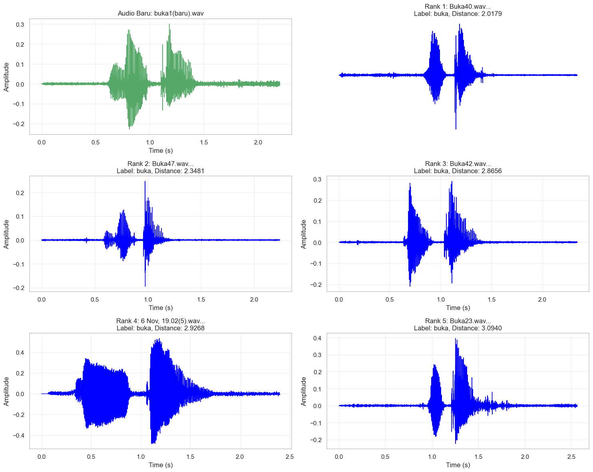
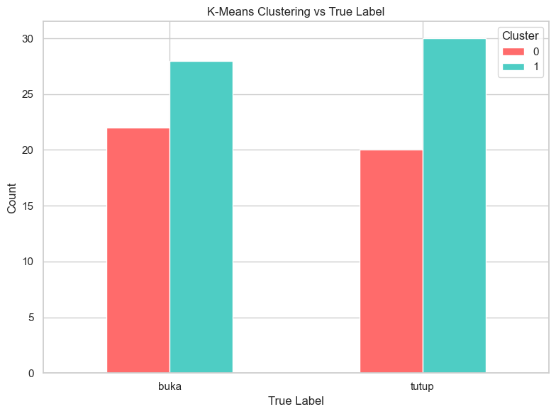
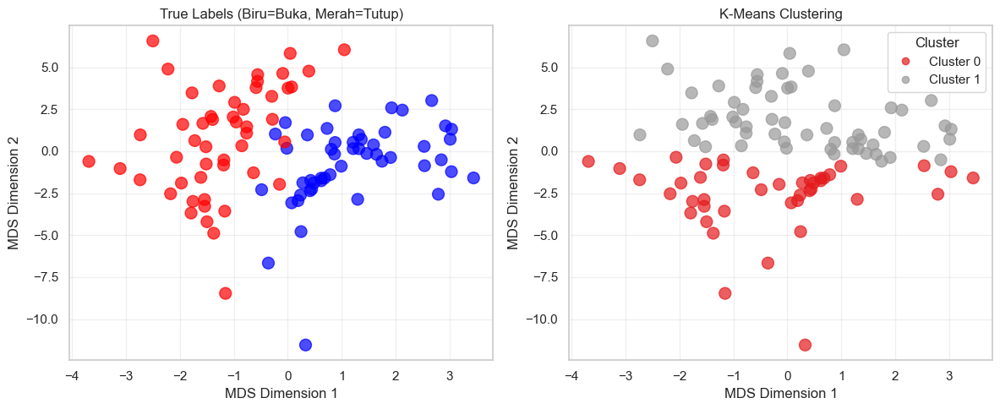

Menghitung jarak antara data lama(buka tutup) masing masing 100 data dengan data baru 1 data menggunakan Dynamic Time Warping#
1.1 Suara Tutup#
import os
import os
import librosa
import librosa.display
import numpy as np
import pandas as pd
import matplotlib.pyplot as plt
import seaborn as sns
import IPython.display as ipd
sns.set(style="whitegrid")
plt.rcParams['figure.figsize'] = (10, 4)
DATASET_PATH = "dataset48k"
train_path = os.path.join(DATASET_PATH, "train")
Visualisasi Suara Waveforms#
def plot_all_tutup_timeseries(base_path, max_files=None):
tutup_path = os.path.join(base_path, "tutup")
tutup_files = os.listdir(tutup_path)
if max_files:
tutup_files = tutup_files[:max_files]
n_files = len(tutup_files)
cols = 2
rows = (n_files + cols - 1) // cols
fig, axes = plt.subplots(rows, cols, figsize=(15, 3*rows))
if rows == 1:
axes = axes.reshape(1, -1)
for i, filename in enumerate(tutup_files):
file_path = os.path.join(tutup_path, filename)
# Load audio
y, sr = librosa.load(file_path, sr=None)
# Hitung time axis
time = np.linspace(0, len(y)/sr, len(y))
# Plot
row = i // cols
col = i % cols
axes[row, col].plot(time, y)
axes[row, col].set_title(f'Tutup - {filename}', fontsize=10)
axes[row, col].set_xlabel('Waktu (detik)')
axes[row, col].set_ylabel('Amplitude')
axes[row, col].grid(True, alpha=0.3)
for i in range(len(tutup_files), rows * cols):
row = i // cols
col = i % cols
fig.delaxes(axes[row, col])
plt.tight_layout()
plt.show()
print(f"Menampilkan {len(tutup_files)} file audio 'tutup'")
plot_all_tutup_timeseries(train_path, max_files=10)

Menampilkan 10 file audio 'tutup'
Perhitungan Dynamic Time Warping#
import numpy as np
from dtaidistance import dtw
import pandas as pd
from sklearn.preprocessing import StandardScaler
import matplotlib.pyplot as plt
import seaborn as sns
def extract_features_for_dtw(audio_path, feature_type='mfcc'):
y, sr = librosa.load(audio_path, sr=22050)
mel_spec = librosa.feature.melspectrogram(y=y, sr=sr, n_mels=128)
mel_spec_db = librosa.power_to_db(mel_spec, ref=np.max)
chroma = librosa.feature.chroma_stft(y=y, sr=sr)
mel_6_mean = np.mean(mel_spec_db[6, :])
mel_6_std = np.std(mel_spec_db[6, :])
mel_7_mean = np.mean(mel_spec_db[7, :])
mel_7_std = np.std(mel_spec_db[7, :])
chroma_0_mean = np.mean(chroma[0, :])
from scipy.stats import skew
stat_skew = skew(y)
model_features = np.array([
mel_7_std,
chroma_0_mean,
mel_6_std,
stat_skew,
mel_7_mean
])
return model_features
# def extract_features_for_dtw(audio_path, n_mfcc=13):
# y, sr = librosa.load(audio_path, sr=22050)
# mfcc = librosa.feature.mfcc(y=y, sr=sr, n_mfcc=n_mfcc)
# seq = mfcc[0, :]
# return seq
def calculate_dtw_distances(new_audio_path, train_path, max_files=100):
try:
new_features = extract_features_for_dtw(new_audio_path, 'mfcc')
# new_features = extract_features_for_dtw(new_audio_path)
except Exception as e:
print(f"Errorrrrrrr")
return None
tutup_train_files = []
train_labels = []
tutup_path = os.path.join(train_path, "tutup")
if os.path.exists(tutup_path):
for file in os.listdir(tutup_path):
if file.endswith(('.wav')):
tutup_train_files.append(os.path.join(tutup_path, file))
train_labels.append('tutup')
if len(tutup_train_files) > max_files:
indices = np.random.choice(len(tutup_train_files), max_files, replace=False)
tutup_train_files = [tutup_train_files[i] for i in indices]
train_labels = [train_labels[i] for i in indices]
results = []
for i, (train_file, label) in enumerate(zip(tutup_train_files, train_labels)):
try:
# Ekstrak fitur dari file training
train_features = extract_features_for_dtw(train_file, 'mfcc')
# train_features = extract_features_for_dtw(train_file)
# Hitung jarak DTW
dtw_distance = dtw.distance(new_features, train_features)
results.append({
'rank': i + 1,
'filename': os.path.basename(train_file),
'label': label,
'dtw_distance': dtw_distance,
'file_path': train_file
})
except Exception as e:
print(f" Error processing {train_file}: {e}")
continue
df_results = pd.DataFrame(results)
df_results = df_results.sort_values('dtw_distance').reset_index(drop=True)
df_results['rank'] = range(1, len(df_results) + 1)
return df_results
# Path audio baru
new_audio_path = "dataset48k/Tutup1(baru).wav"
# Hitung jarak DTW
dtw_results = calculate_dtw_distances(new_audio_path, train_path, max_files=100)
if dtw_results is not None:
print(f"\n=== RANKING JARAK DTW (Top 20) ===")
print(dtw_results.head(20).to_string(index=False))
print(f"\n=== STATISTIK HASIL ===")
print(f"Total file dianalisis: {len(dtw_results)}")
print(f"Jarak minimum: {dtw_results['dtw_distance'].min():.4f}")
print(f"Jarak maksimum: {dtw_results['dtw_distance'].max():.4f}")
print(f"Jarak rata-rata: {dtw_results['dtw_distance'].mean():.4f}")
---------------------------------------------------------------------------
ModuleNotFoundError Traceback (most recent call last)
Cell In[4], line 2
1 import numpy as np
----> 2 from dtaidistance import dtw
3 import pandas as pd
4 from sklearn.preprocessing import StandardScaler
ModuleNotFoundError: No module named 'dtaidistance'
Perangkingan dan Perbandingan#
def visualize_dtw_results(dtw_results, new_audio_path):
fig, ax = plt.subplots(1, 1, figsize=(15, 8))
# Top 20 ranking
top_20 = dtw_results.head(20)
colors = ['red' if label == 'tutup' else 'blue' for label in top_20['label']]
ax.barh(range(len(top_20)), top_20['dtw_distance'], color=colors, alpha=0.7)
ax.set_yticks(range(len(top_20)))
ax.set_yticklabels([f"{row['rank']}-{row['filename'][:15]}..."
for _, row in top_20.iterrows()], fontsize=8)
ax.set_xlabel('DTW Distance')
ax.set_title('Top 20 Terdekat (Merah=Tutup, Biru=Buka)')
ax.invert_yaxis()
ax.grid(True, alpha=0.3)
plt.tight_layout()
plt.show()
print("\n=== PERBANDINGAN WAVEFORM ===")
plot_waveform_comparison(new_audio_path, dtw_results.head(5))
def plot_waveform_comparison(new_audio_path, top_matches):
fig, axes = plt.subplots(3, 2, figsize=(15, 12))
# Audio baru
y_new, sr_new = librosa.load(new_audio_path, sr=22050)
time_new = np.linspace(0, len(y_new)/sr_new, len(y_new))
axes[0, 0].plot(time_new, y_new, 'g-', linewidth=1)
axes[0, 0].set_title(f'Audio Baru: {os.path.basename(new_audio_path)}')
axes[0, 0].set_xlabel('Time (s)')
axes[0, 0].set_ylabel('Amplitude')
axes[0, 0].grid(True, alpha=0.3)
for i, (_, row) in enumerate(top_matches.iterrows()):
if i >= 5:
break
try:
y_match, sr_match = librosa.load(row['file_path'], sr=22050)
time_match = np.linspace(0, len(y_match)/sr_match, len(y_match))
row_idx = (i + 1) // 2
col_idx = (i + 1) % 2
if row_idx < 3:
color = 'red' if row['label'] == 'tutup' else 'blue'
axes[row_idx, col_idx].plot(time_match, y_match, color=color, linewidth=1)
axes[row_idx, col_idx].set_title(f'Rank {row["rank"]}: {row["filename"][:20]}...\nLabel: {row["label"]}, Distance: {row["dtw_distance"]:.4f}')
axes[row_idx, col_idx].set_xlabel('Time (s)')
axes[row_idx, col_idx].set_ylabel('Amplitude')
axes[row_idx, col_idx].grid(True, alpha=0.3)
except Exception as e:
print(f"Error loading {row['filename']}: {e}")
continue
axes[0, 1].axis('off')
plt.tight_layout()
plt.show()
if dtw_results is not None:
visualize_dtw_results(dtw_results, new_audio_path)
print(f"\n=== SEMUA RANKING DTW (1-{len(dtw_results)}) ===")
print(dtw_results[['rank', 'filename', 'label', 'dtw_distance']].to_string(index=False))

=== PERBANDINGAN WAVEFORM ===

=== SEMUA RANKING DTW (1-100) ===
rank filename label dtw_distance
1 Tutup7.wav tutup 2.498905
2 6 Nov, 19.06.wav tutup 2.997704
3 Tutup4.wav tutup 3.145387
4 6 Nov, 19.06(3).wav tutup 3.189983
5 6 Nov, 19.07(3).wav tutup 3.219333
6 6 Nov, 19.07(4).wav tutup 3.224294
7 Tutup50.wav tutup 3.242314
8 6 Nov, 19.08.wav tutup 3.355725
9 6 Nov, 19.04(13).wav tutup 3.404194
10 6 Nov, 19.07(2).wav tutup 3.410351
11 6 Nov, 19.07(12).wav tutup 3.445564
12 Tutup12.wav tutup 3.471357
13 Tutup3.wav tutup 3.507030
14 6 Nov, 19.04(12).wav tutup 3.554224
15 6 Nov, 19.06(6).wav tutup 3.696695
16 6 Nov, 19.04(9).wav tutup 3.723247
17 6 Nov, 19.05(3).wav tutup 3.876211
18 6 Nov, 19.06(11).wav tutup 4.025237
19 6 Nov, 19.05(6).wav tutup 4.066827
20 6 Nov, 19.08(4).wav tutup 4.090991
21 6 Nov, 19.05(8).wav tutup 4.164263
22 6 Nov, 19.05(4).wav tutup 4.172490
23 Tutup25.wav tutup 4.173574
24 6 Nov, 19.05(5).wav tutup 4.227037
25 6 Nov, 19.06(7).wav tutup 4.228585
26 6 Nov, 19.05(2).wav tutup 4.270953
27 6 Nov, 19.06(10).wav tutup 4.331669
28 Tutup6.wav tutup 4.331832
29 Tutup8.wav tutup 4.408210
30 Tutup17.wav tutup 4.424044
31 6 Nov, 19.04(10).wav tutup 4.454275
32 6 Nov, 19.08(2).wav tutup 4.473069
33 6 Nov, 19.07(8).wav tutup 4.514622
34 Tutup28.wav tutup 4.526496
35 6 Nov, 19.06(8).wav tutup 4.532216
36 Tutup1.wav tutup 4.592234
37 6 Nov, 19.07(9).wav tutup 4.631488
38 6 Nov, 19.05(7).wav tutup 4.636031
39 6 Nov, 19.05.wav tutup 4.653447
40 6 Nov, 19.06(4).wav tutup 4.677143
41 6 Nov, 19.07(5).wav tutup 4.747253
42 6 Nov, 19.08(5).wav tutup 4.924838
43 6 Nov, 19.08(3).wav tutup 4.941946
44 6 Nov, 19.04(11).wav tutup 4.964718
45 Tutup47.wav tutup 4.994325
46 6 Nov, 19.05(9).wav tutup 5.029735
47 6 Nov, 19.06(9).wav tutup 5.045523
48 Tutup32.wav tutup 5.053746
49 Tutup14.wav tutup 5.190137
50 6 Nov, 19.05(12).wav tutup 5.248093
51 Tutup36.wav tutup 5.287532
52 Tutup43.wav tutup 5.319111
53 Tutup19.wav tutup 5.336080
54 Tutup11.wav tutup 5.384569
55 6 Nov, 19.06(2).wav tutup 5.388528
56 Tutup33.wav tutup 5.397401
57 6 Nov, 19.05(10).wav tutup 5.404081
58 Tutup37.wav tutup 5.458000
59 Tutup5.wav tutup 5.487259
60 6 Nov, 19.06(5).wav tutup 5.534069
61 6 Nov, 19.06(14).wav tutup 5.625063
62 6 Nov, 19.06(13).wav tutup 5.656824
63 6 Nov, 19.08(6).wav tutup 5.692562
64 6 Nov, 19.07(6).wav tutup 5.701047
65 6 Nov, 19.07(10).wav tutup 5.727476
66 6 Nov, 19.06(12).wav tutup 5.766581
67 6 Nov, 19.06(15).wav tutup 5.858089
68 6 Nov, 19.05(11).wav tutup 5.885289
69 Tutup40.wav tutup 5.949251
70 Tutup10.wav tutup 6.164688
71 Tutup18.wav tutup 6.387754
72 6 Nov, 19.07.wav tutup 6.571221
73 Tutup31.wav tutup 6.586253
74 Tutup15.wav tutup 6.666486
75 Tutup44.wav tutup 6.704853
76 Tutup9.wav tutup 6.751711
77 6 Nov, 19.06(16).wav tutup 6.815807
78 6 Nov, 19.07(7).wav tutup 7.024363
79 Tutup38.wav tutup 7.045342
80 Tutup24.wav tutup 7.064572
81 Tutup21.wav tutup 7.241127
82 Tutup48.wav tutup 7.362549
83 Tutup20.wav tutup 7.410393
84 Tutup27.wav tutup 7.438529
85 Tutup42.wav tutup 7.557506
86 Tutup35.wav tutup 7.746609
87 Tutup23.wav tutup 8.000269
88 Tutup16.wav tutup 8.034847
89 Tutup22.wav tutup 8.042340
90 Tutup45.wav tutup 8.101034
91 Tutup39.wav tutup 8.291714
92 Tutup46.wav tutup 8.408844
93 6 Nov, 19.05(13).wav tutup 8.642299
94 6 Nov, 19.07(11).wav tutup 8.913610
95 Tutup30.wav tutup 9.032371
96 Tutup13.wav tutup 9.144341
97 Tutup2.wav tutup 9.223264
98 Tutup41.wav tutup 9.731411
99 Tutup49.wav tutup 9.804790
100 Tutup29.wav tutup 10.016970
1.2 Suara Buka#
import os
import os
import librosa
import librosa.display
import numpy as np
import pandas as pd
import matplotlib.pyplot as plt
import seaborn as sns
import IPython.display as ipd
sns.set(style="whitegrid")
plt.rcParams['figure.figsize'] = (10, 4)
DATASET_PATH = "dataset48k"
train_path = os.path.join(DATASET_PATH, "train")
Visualisasi Suara Waveforms#
def plot_all_tutup_timeseries(base_path, max_files=None):
tutup_path = os.path.join(base_path, "buka")
tutup_files = os.listdir(tutup_path)
if max_files:
tutup_files = tutup_files[:max_files]
n_files = len(tutup_files)
cols = 2
rows = (n_files + cols - 1) // cols
fig, axes = plt.subplots(rows, cols, figsize=(15, 3*rows))
if rows == 1:
axes = axes.reshape(1, -1)
for i, filename in enumerate(tutup_files):
file_path = os.path.join(tutup_path, filename)
# Load audio
y, sr = librosa.load(file_path, sr=None)
# Hitung time axis
time = np.linspace(0, len(y)/sr, len(y))
# Plot
row = i // cols
col = i % cols
axes[row, col].plot(time, y)
axes[row, col].set_title(f'Buka - {filename}', fontsize=10)
axes[row, col].set_xlabel('Waktu (detik)')
axes[row, col].set_ylabel('Amplitude')
axes[row, col].grid(True, alpha=0.3)
for i in range(len(tutup_files), rows * cols):
row = i // cols
col = i % cols
fig.delaxes(axes[row, col])
plt.tight_layout()
plt.show()
print(f"Menampilkan {len(tutup_files)} file audio 'buka'")
plot_all_tutup_timeseries(train_path, max_files=10)

Menampilkan 10 file audio 'buka'
Perhitungan Dynamic Time Warping#
import numpy as np
from dtaidistance import dtw
import pandas as pd
from sklearn.preprocessing import StandardScaler
import matplotlib.pyplot as plt
import seaborn as sns
def extract_features_for_dtw(audio_path, feature_type='mfcc'):
y, sr = librosa.load(audio_path, sr=22050)
mel_spec = librosa.feature.melspectrogram(y=y, sr=sr, n_mels=128)
mel_spec_db = librosa.power_to_db(mel_spec, ref=np.max)
chroma = librosa.feature.chroma_stft(y=y, sr=sr)
mel_6_mean = np.mean(mel_spec_db[6, :])
mel_6_std = np.std(mel_spec_db[6, :])
mel_7_mean = np.mean(mel_spec_db[7, :])
mel_7_std = np.std(mel_spec_db[7, :])
chroma_0_mean = np.mean(chroma[0, :])
from scipy.stats import skew
stat_skew = skew(y)
model_features = np.array([
mel_7_std,
chroma_0_mean,
mel_6_std,
stat_skew,
mel_7_mean
])
return model_features
# def extract_features_for_dtw(audio_path, n_mfcc=13):
# y, sr = librosa.load(audio_path, sr=22050)
# mfcc = librosa.feature.mfcc(y=y, sr=sr, n_mfcc=n_mfcc)
# seq = mfcc[0, :]
return seq
def calculate_dtw_distances(new_audio_path, train_path, max_files=100):
try:
new_features = extract_features_for_dtw(new_audio_path, 'mfcc')
# new_features = extract_features_for_dtw(new_audio_path)
except Exception as e:
print(f"Errorrrrrrr")
return None
tutup_train_files = []
train_labels = []
tutup_path = os.path.join(train_path, "buka")
if os.path.exists(tutup_path):
for file in os.listdir(tutup_path):
if file.endswith(('.wav')):
tutup_train_files.append(os.path.join(tutup_path, file))
train_labels.append('buka')
if len(tutup_train_files) > max_files:
indices = np.random.choice(len(tutup_train_files), max_files, replace=False)
tutup_train_files = [tutup_train_files[i] for i in indices]
train_labels = [train_labels[i] for i in indices]
results = []
for i, (train_file, label) in enumerate(zip(tutup_train_files, train_labels)):
try:
# Ekstrak fitur dari file training
train_features = extract_features_for_dtw(train_file, 'mfcc')
# train_features = extract_features_for_dtw(train_file)
# Hitung jarak DTW
dtw_distance = dtw.distance(new_features, train_features)
results.append({
'rank': i + 1,
'filename': os.path.basename(train_file),
'label': label,
'dtw_distance': dtw_distance,
'file_path': train_file
})
except Exception as e:
print(f" Error processing {train_file}: {e}")
continue
df_results = pd.DataFrame(results)
df_results = df_results.sort_values('dtw_distance').reset_index(drop=True)
df_results['rank'] = range(1, len(df_results) + 1)
return df_results
# Path audio baru
new_audio_path = "dataset48k/buka1(baru).wav"
# Hitung jarak DTW
dtw_results = calculate_dtw_distances(new_audio_path, train_path, max_files=100)
if dtw_results is not None:
print(f"\n=== RANKING JARAK DTW (Top 20) ===")
print(dtw_results.head(20).to_string(index=False))
print(f"\n=== STATISTIK HASIL ===")
print(f"Total file dianalisis: {len(dtw_results)}")
print(f"Jarak minimum: {dtw_results['dtw_distance'].min():.4f}")
print(f"Jarak maksimum: {dtw_results['dtw_distance'].max():.4f}")
print(f"Jarak rata-rata: {dtw_results['dtw_distance'].mean():.4f}")
=== RANKING JARAK DTW (Top 20) ===
rank filename label dtw_distance file_path
1 Buka40.wav buka 2.017944 dataset48k\train\buka\Buka40.wav
2 Buka47.wav buka 2.348140 dataset48k\train\buka\Buka47.wav
3 Buka42.wav buka 2.865573 dataset48k\train\buka\Buka42.wav
4 6 Nov, 19.02(5).wav buka 2.926826 dataset48k\train\buka\6 Nov, 19.02(5).wav
5 Buka23.wav buka 3.093970 dataset48k\train\buka\Buka23.wav
6 Buka29.wav buka 3.230937 dataset48k\train\buka\Buka29.wav
7 Buka41.wav buka 3.254846 dataset48k\train\buka\Buka41.wav
8 Buka45.wav buka 3.280843 dataset48k\train\buka\Buka45.wav
9 6 Nov, 18.58(16).wav buka 3.680647 dataset48k\train\buka\6 Nov, 18.58(16).wav
10 6 Nov, 18.59(13).wav buka 3.811741 dataset48k\train\buka\6 Nov, 18.59(13).wav
11 6 Nov, 19.00(8).wav buka 3.879935 dataset48k\train\buka\6 Nov, 19.00(8).wav
12 Buka43.wav buka 3.931049 dataset48k\train\buka\Buka43.wav
13 Buka30.wav buka 3.937225 dataset48k\train\buka\Buka30.wav
14 Buka36.wav buka 3.950735 dataset48k\train\buka\Buka36.wav
15 6 Nov, 18.59(4).wav buka 3.990101 dataset48k\train\buka\6 Nov, 18.59(4).wav
16 6 Nov, 19.00(7).wav buka 4.058027 dataset48k\train\buka\6 Nov, 19.00(7).wav
17 6 Nov, 19.00(3).wav buka 4.130863 dataset48k\train\buka\6 Nov, 19.00(3).wav
18 6 Nov, 19.01(16).wav buka 4.201015 dataset48k\train\buka\6 Nov, 19.01(16).wav
19 6 Nov, 19.01(2).wav buka 4.258887 dataset48k\train\buka\6 Nov, 19.01(2).wav
20 6 Nov, 18.59(5).wav buka 4.331245 dataset48k\train\buka\6 Nov, 18.59(5).wav
=== STATISTIK HASIL ===
Total file dianalisis: 100
Jarak minimum: 2.0179
Jarak maksimum: 15.1158
Jarak rata-rata: 6.7378
Perangkingan dan Perbandingan#
def visualize_dtw_results(dtw_results, new_audio_path):
fig, ax = plt.subplots(1, 1, figsize=(15, 8))
# Top 20 ranking
top_20 = dtw_results.head(20)
colors = ['red' if label == 'tutup' else 'blue' for label in top_20['label']]
ax.barh(range(len(top_20)), top_20['dtw_distance'], color=colors, alpha=0.7)
ax.set_yticks(range(len(top_20)))
ax.set_yticklabels([f"{row['rank']}-{row['filename'][:15]}..."
for _, row in top_20.iterrows()], fontsize=8)
ax.set_xlabel('DTW Distance')
ax.set_title('Top 20 Terdekat (Merah=Tutup, Biru=Buka)')
ax.invert_yaxis()
ax.grid(True, alpha=0.3)
plt.tight_layout()
plt.show()
# Waveform comparison
print("\n=== PERBANDINGAN WAVEFORM ===")
plot_waveform_comparison(new_audio_path, dtw_results.head(5))
def plot_waveform_comparison(new_audio_path, top_matches):
fig, axes = plt.subplots(3, 2, figsize=(15, 12))
# Audio baru
y_new, sr_new = librosa.load(new_audio_path, sr=22050)
time_new = np.linspace(0, len(y_new)/sr_new, len(y_new))
axes[0, 0].plot(time_new, y_new, 'g-', linewidth=1)
axes[0, 0].set_title(f'Audio Baru: {os.path.basename(new_audio_path)}')
axes[0, 0].set_xlabel('Time (s)')
axes[0, 0].set_ylabel('Amplitude')
axes[0, 0].grid(True, alpha=0.3)
for i, (_, row) in enumerate(top_matches.iterrows()):
if i >= 5:
break
try:
y_match, sr_match = librosa.load(row['file_path'], sr=22050)
time_match = np.linspace(0, len(y_match)/sr_match, len(y_match))
row_idx = (i + 1) // 2
col_idx = (i + 1) % 2
if row_idx < 3:
color = 'red' if row['label'] == 'tutup' else 'blue'
axes[row_idx, col_idx].plot(time_match, y_match, color=color, linewidth=1)
axes[row_idx, col_idx].set_title(f'Rank {row["rank"]}: {row["filename"][:20]}...\nLabel: {row["label"]}, Distance: {row["dtw_distance"]:.4f}')
axes[row_idx, col_idx].set_xlabel('Time (s)')
axes[row_idx, col_idx].set_ylabel('Amplitude')
axes[row_idx, col_idx].grid(True, alpha=0.3)
except Exception as e:
print(f"Error loading {row['filename']}: {e}")
continue
axes[0, 1].axis('off')
plt.tight_layout()
plt.show()
if dtw_results is not None:
visualize_dtw_results(dtw_results, new_audio_path)
print(f"\n=== SEMUA RANKING DTW (1-{len(dtw_results)}) ===")
print(dtw_results[['rank', 'filename', 'label', 'dtw_distance']].to_string(index=False))

=== PERBANDINGAN WAVEFORM ===

=== SEMUA RANKING DTW (1-100) ===
rank filename label dtw_distance
1 Buka40.wav buka 2.017944
2 Buka47.wav buka 2.348140
3 Buka42.wav buka 2.865573
4 6 Nov, 19.02(5).wav buka 2.926826
5 Buka23.wav buka 3.093970
6 Buka29.wav buka 3.230937
7 Buka41.wav buka 3.254846
8 Buka45.wav buka 3.280843
9 6 Nov, 18.58(16).wav buka 3.680647
10 6 Nov, 18.59(13).wav buka 3.811741
11 6 Nov, 19.00(8).wav buka 3.879935
12 Buka43.wav buka 3.931049
13 Buka30.wav buka 3.937225
14 Buka36.wav buka 3.950735
15 6 Nov, 18.59(4).wav buka 3.990101
16 6 Nov, 19.00(7).wav buka 4.058027
17 6 Nov, 19.00(3).wav buka 4.130863
18 6 Nov, 19.01(16).wav buka 4.201015
19 6 Nov, 19.01(2).wav buka 4.258887
20 6 Nov, 18.59(5).wav buka 4.331245
21 6 Nov, 19.02(3).wav buka 4.376802
22 6 Nov, 19.01(13).wav buka 4.383999
23 6 Nov, 19.01(14).wav buka 4.406653
24 Buka49.wav buka 4.419929
25 Buka37.wav buka 4.490478
26 6 Nov, 19.00.wav buka 4.504221
27 6 Nov, 19.02(4).wav buka 4.532907
28 6 Nov, 19.01(11).wav buka 4.543680
29 6 Nov, 19.01(12).wav buka 4.583375
30 6 Nov, 19.00(10).wav buka 4.610471
31 Buka46.wav buka 4.631143
32 Buka48.wav buka 4.632202
33 6 Nov, 19.00(13).wav buka 4.644398
34 6 Nov, 19.01(15).wav buka 4.698405
35 Buka50.wav buka 4.700300
36 6 Nov, 19.02(2).wav buka 4.728070
37 6 Nov, 19.00(6).wav buka 4.783633
38 6 Nov, 19.00(12).wav buka 4.813002
39 6 Nov, 19.00(4).wav buka 4.917167
40 6 Nov, 18.59(11).wav buka 4.968335
41 Buka44.wav buka 4.971522
42 6 Nov, 19.01.wav buka 4.994384
43 6 Nov, 18.59(12).wav buka 5.029922
44 6 Nov, 19.00(5).wav buka 5.154113
45 6 Nov, 19.00(9).wav buka 5.170340
46 6 Nov, 18.59(6).wav buka 5.271142
47 6 Nov, 19.01(8).wav buka 5.274909
48 6 Nov, 18.59(7).wav buka 5.599707
49 6 Nov, 19.01(10).wav buka 5.695329
50 6 Nov, 19.02.wav buka 5.722654
51 6 Nov, 19.00(2).wav buka 5.742332
52 6 Nov, 19.00(11).wav buka 5.784894
53 6 Nov, 18.59(14).wav buka 5.836259
54 6 Nov, 18.59(9).wav buka 6.168609
55 Buka31.wav buka 6.389037
56 6 Nov, 19.01(3).wav buka 6.397601
57 Buka27.wav buka 6.469989
58 Buka28.wav buka 6.482929
59 Buka24.wav buka 6.567859
60 6 Nov, 18.59(8).wav buka 6.607101
61 6 Nov, 19.01(5).wav buka 6.618717
62 6 Nov, 19.01(9).wav buka 6.775822
63 6 Nov, 18.59.wav buka 6.855957
64 Buka32.wav buka 6.897148
65 Buka33.wav buka 6.902458
66 6 Nov, 19.01(4).wav buka 6.955579
67 6 Nov, 18.58(17).wav buka 6.984056
68 Buka35.wav buka 7.098739
69 Buka22.wav buka 7.177862
70 Buka26.wav buka 7.264336
71 6 Nov, 18.59(3).wav buka 7.380127
72 6 Nov, 19.01(7).wav buka 7.416726
73 6 Nov, 19.01(6).wav buka 7.524647
74 6 Nov, 18.59(2).wav buka 7.533268
75 Buka2.wav buka 7.916862
76 6 Nov, 18.59(10).wav buka 8.007867
77 Buka34.wav buka 8.031387
78 Buka20.wav buka 8.551378
79 Buka5.wav buka 9.018333
80 Buka39.wav buka 9.168830
81 Buka13.wav buka 9.424289
82 Buka9.wav buka 10.166407
83 6 Nov, 19.01(17).wav buka 10.607474
84 Buka15.wav buka 10.680291
85 Buka25.wav buka 10.878322
86 Buka6.wav buka 11.190612
87 Buka12.wav buka 11.420167
88 Buka1.wav buka 11.481681
89 Buka3.wav buka 11.502428
90 Buka19.wav buka 12.121069
91 Buka4.wav buka 12.252349
92 Buka14.wav buka 12.261923
93 Buka8.wav buka 12.376632
94 Buka17.wav buka 12.411427
95 Buka16.wav buka 13.456180
96 Buka21.wav buka 14.045314
97 Buka18.wav buka 14.425593
98 Buka11.wav buka 14.475196
99 Buka7.wav buka 14.528457
100 Buka10.wav buka 15.115760
1.3 Clustering#
def compute_dtw_distance_matrix(audio_files, labels):
n = len(audio_files)
distance_matrix = np.zeros((n, n))
features_list = []
for i, file_path in enumerate(audio_files):
try:
features = extract_features_for_dtw(file_path, 'mfcc')
features_list.append(features)
except Exception as e:
print(f"Error: {file_path} - {e}")
features_list.append(None)
for i in range(n):
for j in range(i+1, n):
if features_list[i] is not None and features_list[j] is not None:
dist = dtw.distance(features_list[i], features_list[j])
distance_matrix[i, j] = dist
distance_matrix[j, i] = dist
return distance_matrix, features_list
from sklearn.cluster import KMeans
def perform_kmeans_clustering(distance_matrix, labels, filenames, n_clusters=2):
kmeans = KMeans(n_clusters=n_clusters, random_state=42, n_init=10)
kmeans_labels = kmeans.fit_predict(distance_matrix)
df_clustering = pd.DataFrame({
'filename': filenames,
'true_label': labels,
'kmeans_cluster': kmeans_labels
})
return df_clustering, kmeans_labels
def visualize_kmeans_clustering(df_clustering):
comparison_kmeans = pd.crosstab(df_clustering['true_label'],
df_clustering['kmeans_cluster'])
ax = comparison_kmeans.plot(kind='bar',
figsize=(8, 6),
color=['#FF6B6B', '#4ECDC4'])
plt.title('K-Means Clustering vs True Label', fontsize=12)
plt.xlabel('True Label')
plt.ylabel('Count')
plt.legend(title='Cluster')
plt.xticks(rotation=0)
plt.tight_layout()
plt.show()
def calculate_kmeans_accuracy(df_clustering):
from sklearn.metrics import adjusted_rand_score, normalized_mutual_info_score
true_numeric = df_clustering['true_label'].map({'buka': 0, 'tutup': 1}).values
kmeans_ari = adjusted_rand_score(true_numeric, df_clustering['kmeans_cluster'])
kmeans_nmi = normalized_mutual_info_score(true_numeric, df_clustering['kmeans_cluster'])
print("=== EVALUASI CLUSTERING (K-Means) ===")
print(f" Adjusted Rand Index : {kmeans_ari:.4f}")
print(f" Normalized Mutual Info : {kmeans_nmi:.4f}")
return kmeans_ari, kmeans_nmi
print("=" * 50)
print("CLUSTERING SUARA BUKA DAN TUTUP")
print("=" * 50)
all_files = []
all_labels = []
all_filenames = []
buka_path = os.path.join(train_path, "buka")
tutup_path = os.path.join(train_path, "tutup")
if os.path.exists(buka_path):
buka_files = [f for f in os.listdir(buka_path) if f.endswith('.wav')][:50]
for f in buka_files:
all_files.append(os.path.join(buka_path, f))
all_labels.append('buka')
all_filenames.append(f)
if os.path.exists(tutup_path):
tutup_files = [f for f in os.listdir(tutup_path) if f.endswith('.wav')][:50]
for f in tutup_files:
all_files.append(os.path.join(tutup_path, f))
all_labels.append('tutup')
all_filenames.append(f)
print(f"Total file: {len(all_files)}")
print(f" - Buka : {all_labels.count('buka')}")
print(f" - Tutup: {all_labels.count('tutup')}")
distance_matrix, features_list = compute_dtw_distance_matrix(all_files, all_labels)
df_clustering, kmeans_labels = perform_kmeans_clustering(
distance_matrix, all_labels, all_filenames, n_clusters=2
)
visualize_kmeans_clustering(df_clustering)
calculate_kmeans_accuracy(df_clustering)
print("\n=== HASIL CLUSTERING ===")
print(df_clustering.to_string(index=False))
==================================================
CLUSTERING SUARA BUKA DAN TUTUP
==================================================
Total file: 100
- Buka : 50
- Tutup: 50

=== EVALUASI CLUSTERING (K-Means) ===
Adjusted Rand Index : -0.0083
Normalized Mutual Info : 0.0012
=== HASIL CLUSTERING ===
filename true_label kmeans_cluster
6 Nov, 18.58(16).wav buka 0
6 Nov, 18.58(17).wav buka 1
6 Nov, 18.59(10).wav buka 1
6 Nov, 18.59(11).wav buka 1
6 Nov, 18.59(12).wav buka 1
6 Nov, 18.59(13).wav buka 0
6 Nov, 18.59(14).wav buka 0
6 Nov, 18.59(2).wav buka 0
6 Nov, 18.59(3).wav buka 1
6 Nov, 18.59(4).wav buka 0
6 Nov, 18.59(5).wav buka 1
6 Nov, 18.59(6).wav buka 1
6 Nov, 18.59(7).wav buka 1
6 Nov, 18.59(8).wav buka 1
6 Nov, 18.59(9).wav buka 0
6 Nov, 18.59.wav buka 1
6 Nov, 19.00(10).wav buka 1
6 Nov, 19.00(11).wav buka 1
6 Nov, 19.00(12).wav buka 0
6 Nov, 19.00(13).wav buka 0
6 Nov, 19.00(2).wav buka 0
6 Nov, 19.00(3).wav buka 0
6 Nov, 19.00(4).wav buka 1
6 Nov, 19.00(5).wav buka 1
6 Nov, 19.00(6).wav buka 1
6 Nov, 19.00(7).wav buka 1
6 Nov, 19.00(8).wav buka 1
6 Nov, 19.00(9).wav buka 1
6 Nov, 19.00.wav buka 0
6 Nov, 19.01(10).wav buka 1
6 Nov, 19.01(11).wav buka 0
6 Nov, 19.01(12).wav buka 0
6 Nov, 19.01(13).wav buka 0
6 Nov, 19.01(14).wav buka 0
6 Nov, 19.01(15).wav buka 1
6 Nov, 19.01(16).wav buka 0
6 Nov, 19.01(17).wav buka 0
6 Nov, 19.01(2).wav buka 0
6 Nov, 19.01(3).wav buka 1
6 Nov, 19.01(4).wav buka 0
6 Nov, 19.01(5).wav buka 1
6 Nov, 19.01(6).wav buka 1
6 Nov, 19.01(7).wav buka 1
6 Nov, 19.01(8).wav buka 1
6 Nov, 19.01(9).wav buka 0
6 Nov, 19.01.wav buka 1
6 Nov, 19.02(2).wav buka 1
6 Nov, 19.02(3).wav buka 1
6 Nov, 19.02(4).wav buka 0
6 Nov, 19.02(5).wav buka 0
6 Nov, 19.04(10).wav tutup 0
6 Nov, 19.04(11).wav tutup 1
6 Nov, 19.04(12).wav tutup 1
6 Nov, 19.04(13).wav tutup 0
6 Nov, 19.04(9).wav tutup 0
6 Nov, 19.05(10).wav tutup 0
6 Nov, 19.05(11).wav tutup 0
6 Nov, 19.05(12).wav tutup 1
6 Nov, 19.05(13).wav tutup 1
6 Nov, 19.05(2).wav tutup 0
6 Nov, 19.05(3).wav tutup 1
6 Nov, 19.05(4).wav tutup 1
6 Nov, 19.05(5).wav tutup 1
6 Nov, 19.05(6).wav tutup 1
6 Nov, 19.05(7).wav tutup 1
6 Nov, 19.05(8).wav tutup 0
6 Nov, 19.05(9).wav tutup 0
6 Nov, 19.05.wav tutup 0
6 Nov, 19.06(10).wav tutup 1
6 Nov, 19.06(11).wav tutup 0
6 Nov, 19.06(12).wav tutup 1
6 Nov, 19.06(13).wav tutup 1
6 Nov, 19.06(14).wav tutup 1
6 Nov, 19.06(15).wav tutup 1
6 Nov, 19.06(16).wav tutup 1
6 Nov, 19.06(2).wav tutup 1
6 Nov, 19.06(3).wav tutup 1
6 Nov, 19.06(4).wav tutup 0
6 Nov, 19.06(5).wav tutup 0
6 Nov, 19.06(6).wav tutup 0
6 Nov, 19.06(7).wav tutup 0
6 Nov, 19.06(8).wav tutup 1
6 Nov, 19.06(9).wav tutup 1
6 Nov, 19.06.wav tutup 1
6 Nov, 19.07(10).wav tutup 0
6 Nov, 19.07(11).wav tutup 0
6 Nov, 19.07(12).wav tutup 0
6 Nov, 19.07(2).wav tutup 1
6 Nov, 19.07(3).wav tutup 0
6 Nov, 19.07(4).wav tutup 1
6 Nov, 19.07(5).wav tutup 1
6 Nov, 19.07(6).wav tutup 1
6 Nov, 19.07(7).wav tutup 1
6 Nov, 19.07(8).wav tutup 1
6 Nov, 19.07(9).wav tutup 0
6 Nov, 19.07.wav tutup 1
6 Nov, 19.08(2).wav tutup 1
6 Nov, 19.08(3).wav tutup 0
6 Nov, 19.08(4).wav tutup 1
6 Nov, 19.08(5).wav tutup 1
from sklearn.manifold import MDS
def visualize_mds_kmeans(distance_matrix, df_clustering):
mds = MDS(
n_components=2,
dissimilarity='precomputed',
random_state=42,
normalized_stress='auto'
)
coords = mds.fit_transform(distance_matrix)
fig, axes = plt.subplots(1, 2, figsize=(12, 5))
# True Labels
colors_true = ['blue' if l == 'buka' else 'red'
for l in df_clustering['true_label']]
axes[0].scatter(coords[:, 0], coords[:, 1],
c=colors_true, alpha=0.7, s=100)
axes[0].set_title('True Labels (Biru=Buka, Merah=Tutup)', fontsize=12)
axes[0].set_xlabel('MDS Dimension 1')
axes[0].set_ylabel('MDS Dimension 2')
axes[0].grid(True, alpha=0.3)
# K-Means Clusters
sc = axes[1].scatter(coords[:, 0], coords[:, 1],
c=df_clustering['kmeans_cluster'],
cmap='Set1', alpha=0.7, s=100)
axes[1].set_title('K-Means Clustering', fontsize=12)
axes[1].set_xlabel('MDS Dimension 1')
axes[1].set_ylabel('MDS Dimension 2')
axes[1].grid(True, alpha=0.3)
handles, _ = sc.legend_elements()
axes[1].legend(handles, [f'Cluster {i}' for i in range(len(handles))],
title='Cluster')
plt.tight_layout()
plt.show()
visualize_mds_kmeans(distance_matrix, df_clustering)
